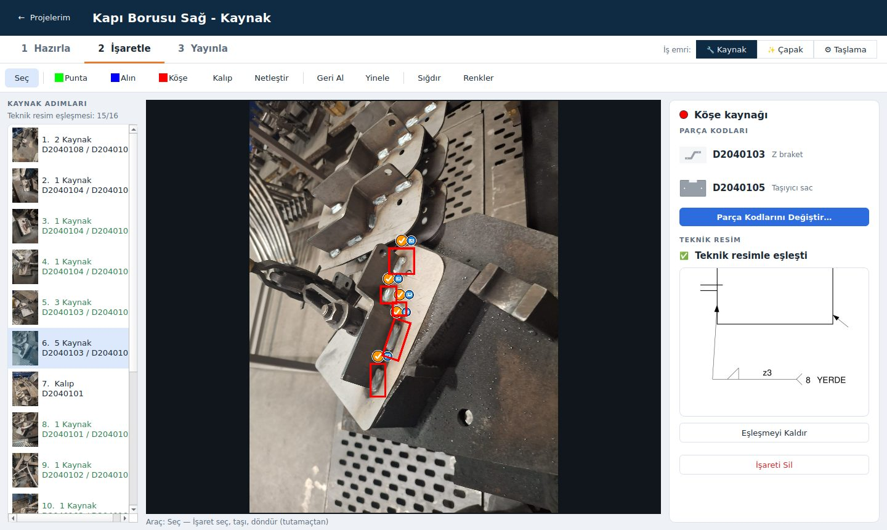
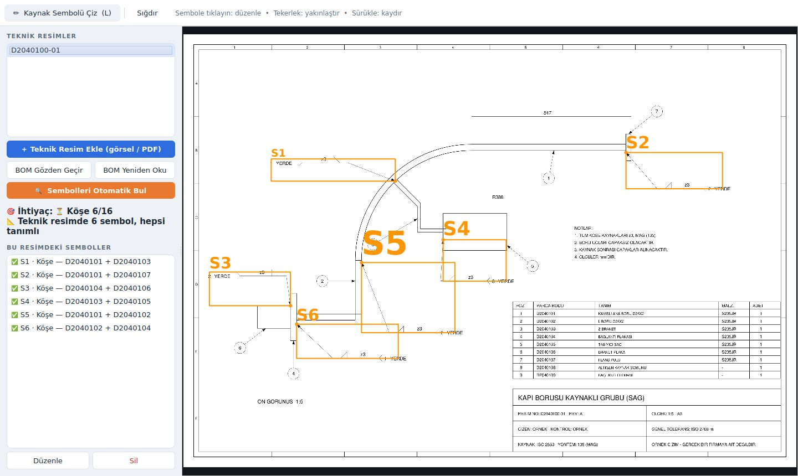
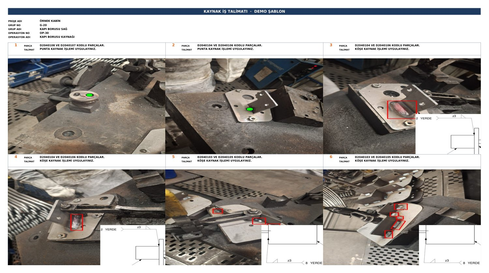

Fabrikanızda elle tekrar eden mühendislik işini otomatikleştiriyorum
İş emri, iş talimatı, kontrol formu, teklif tablosu. Mühendislerinizin her hafta saatlerini alan işi tarif edin; fabrikanızın bilgisayarında çevrimdışı çalışan, kendi şablonlarınızı kullanan bir yazılıma dönüştüreyim.
Bir montajın kaynak, çapak ve taşlama iş emirleri
Stajda ölçülen süre; teknik resim eşleştirmesi dahil. Programla süre, programı düzenli kullanan biri içindir. Taralı kısım aralığı gösterir.
Vaka: kabin üreten büyük bir fabrikada kaynak iş emirleri
Stajım sırasında kaynak iş emirlerini Excel'de elle hazırlıyordum. Bu işi otomatikleştiren programı geliştirdim ve fabrikanın metal işlem ve kaynak yönetimine sundum.
Elle
- OP 10Saha fotoğrafını Excel hücresine yerleştir
- OP 20Kaynak yerlerini fotoğraf üzerinde elle çiz
- OP 30Parça kodunu 3D CAD'de tek tek ara
- OP 40Teknik resimden kaynak sembolünü ekran görüntüsüyle kırp
- OP 50Talimat cümlesini her adım için yaz; çapak ve taşlama için tekrarla
Programla
- OP 10Fotoğrafları ekle; çekim sırasına kendiliğinden dizilir
- OP 20Kaynakları işaretle; parça kodu ve talimat kendiliğinden yazılır
- OP 30Parça kodları reçete fişinin fotoğrafından okunur
- OP 40Teknik resim PDF'inden semboller ve parça listesi okunur; unutulan kaynak uyarı verir
- OP 50Tek tıkla firmanın kendi Excel şablonunda kaynak, çapak ve taşlama iş emirleri



Fotoğraflar ve işaretler sahadan geldiği gibidir. Proje adı, parça kodları, teknik resim ve WPS numaraları tanıtım için değiştirilmiştir; hiçbir firmanın gerçek tasarım verisini içermez.
Programın tamamı, gerçek ekranlarıyla. Sekiz operasyonda reçete okumadan Excel çıktısına kadar kısa açıklamalı bir tur.
Ön izlemeyi açınFabrikanın işine uyar, fabrikadan veri çıkarmaz
Çevrimdışı
Yazılım fabrikanın bilgisayarında çalışır. Çizimler, parça kodları ve şablonlar dışarı gönderilmez.
Mühendis onaylar
Sistem önerir, mühendis onaylar. Kaynak parametresi gibi kritik bilgiler tahminle üretilmez; onaylı kayıtlardan gelir.
Kendi şablonunuz
Çıktı bugün kullandığınız Excel formatında olur. Ekibin alışkanlığı değişmez, yalnızca süre kısalır.
Güvenlik, kurumsal projelerdeki gibi
Veri fabrikada kalır
Yazılım internete bağlanmaz. Teknik resimler ve parça kodları gizli bilgi sayılır; proje sonunda bende kalan kopya silinir ve tutanağa yazılır.
Doğrulanabilir teslim
Her sürüm otomatik testlerden ve bağımlılık zafiyet taramasından geçer. Kurulum dosyasının SHA-256 özeti teslim tutanağında yer alır.
Yazılı güvenlik raporu
Her projeye özel, ISO 27001 kontrollerini esas alan bir rapor: veri akışı, erişim, yedekleme, güncelleme ve bilinen sınırlar.
Elle tekrar eden her iş bir aday
- İş ve montaj talimatlarıFotoğraf, parça listesi ve sıradan standart talimat
- Kontrol ve kalite formlarıÖlçüm girişi, otomatik rapor, izlenebilirlik
- Teklif ve maliyet tablolarıTeknik resim ve malzeme listesinden hızlı teklif
- Malzeme listesi aktarımıPDF ile Excel arasında elle kopyalamayı kaldırma
- Üretim raporlarıDağınık Excel dosyalarından tek tıkla haftalık rapor
- WPS ve WPQR belgeleriOnaylı kayıtlardan standart belge üretimi
Önce küçük bir pilot, sonra karar
- OP 10
Tarif
20 dakikalık görüşmede işi ve bugün kullandığınız şablonu gösterirsiniz.
- OP 20
Pilot
Bir hat ve bir iş türü için yaklaşık 2 hafta. Elle ve programla süre aynı işlerde ölçülür.
- OP 30
Kurulum
Sonuç ikna ederse kurulum, eğitim ve destek. Fiyat pilot sonucuna göre konuşulur.
İşinizi bir cümleyle anlatın
"Her hafta şu formu elle dolduruyoruz" demeniz yeterli. Aynı gün dönüş yaparım.